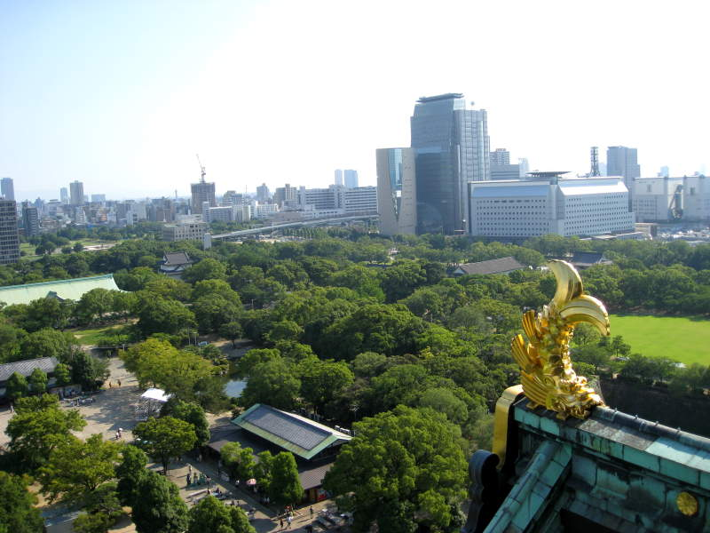

Osaka CastleMe in front of Osaka Castle. Miller thought this was a really nice shot of the castle. I think he was right.
It could be that the castle was very photogenic, however. This one looks nice too.
Here's an up-close corner shot of the castle I took as Miller and I were trying to find our way in.
Deep
within Osaka Castle hid the samurai armor with chihuahua ears.
Perhaps they were embarrassed, but tourists have good money, so
they let us see it.
They
even had this boy wear the peacock hat. I can see him bending
over and charging into an oncoming army, stabbing... let's see... 29
warriors at once.
We climbed up to the roof and looked down. On the grassy field below was the shadow of Osaka Castle.
You
can see Osaka's buildings past the trees. Directly in front of is
a Kin-no-Shachihoko, the fish that Nagoya uses as its symbol.
Apparently it's a popular castle decoration too.
Lots
of impressive buildings to stare at. It almost seems like you can
see the smaller buildings through the reflective building on the left.
If you look closely, you'll see it really is a reflection and not
transparent. The disc-shaped building on the right is a UFO.

More of Osaka, and another Kin-no-Shachihoko fish thingy.
Moss
decorates the walls around the moat. There wasn't too much else
left for us in Osaka after this, at least that we knew of. It was
time to move on to Kyoto.
Back